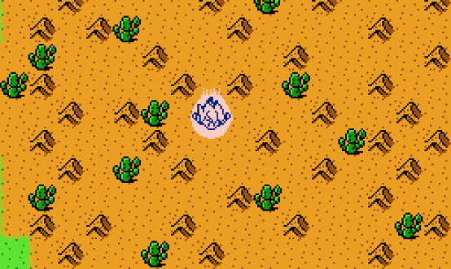
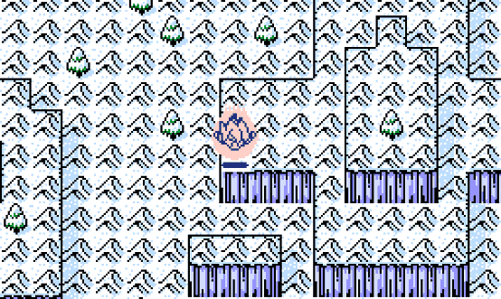
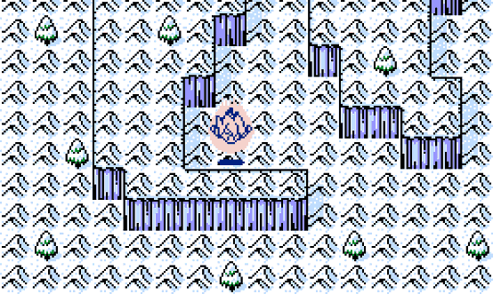
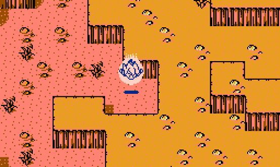
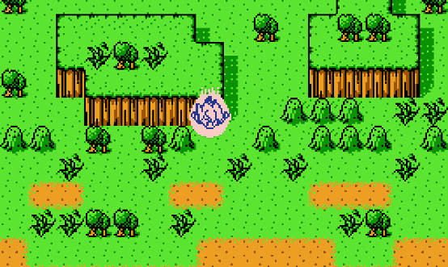

攻略
西の都
遊戲一開始就強迫進來的地方，然後和怪物戰鬥。
グランドアポロン
1、往東南方走，進入都市和人對話。
2、我西南方走，到山那兒。
3、追著鳥走。
4、回西南方的山。
西の砂漠
1、往南走，進入金字塔。
2、往北走，去綠洲和居民對話。
3、回金字塔，往迷宮盡頭的牆走，會跳出訊息。
4、往東偏南走，到砂丘那兒，在迷宮盡頭遇見木乃伊，要抓他 12 次。
ブンブク島
1、往西南方走，進入地洞。（有白色小屋和湖的右下方）
2、往東南走，進入火山。
3、離開這張地圖，到西都按カプセルコーポレーション，然後累積打斷 15 根木板。
4、回ブンブク島，往南偏西走，進入火山。
ブンブク島
1、往西走，挑戰一隻紅色怪物。
2、往東南走，在整塊大陸旁有一小塊陸地，過去吧。
氷の大陸
1、往東南走，進入工業地。
2、重新進來一次氷の大陸。
3、往南偏西走，到大岩塊那兒。
西の都
1、選トンガリタワー。
2、按カプセルコーポレーション，拿龍珠雷達。按そこへでる離開，用龍珠雷達，到西の砂漠找 3 星球，氷の大陸找 6 星球和 7 星球，グランドアポロン找 1 星球，找到四顆龍珠後，在グランドアポロン克林家拿 4 星球。（這遊戲的龍珠雷達設計不良，方位不夠精準，所以請參考圖片。）
3、回西都，按ひととはなす→ピラフ，然後到ブンブク島用龍珠雷達找最後的龍珠。
4、到ブンブク島，往西南走，到大岩塊那兒拿リキニウム。
5、回西都，按カプセルコーポレーション，會飛往宇宙。

西の砂漠 3 星球

氷の大陸 6 星球

氷の大陸 7 星球

グランドアポロン 1 星球

ブンブク島 2 星球和 5 星球
クーン星
1、往西南方走，去很長的塔頂。
2、往西南方走，進去洞穴。
3、重新進來クーン星。（按 B 可切換世界地圖）
4、前往西南不遠處的都市，和パイレじん１對話。
オウター星
1、往西偏南走，進入先前在クーン星步驟 3 時看到的宇宙船，然後累積打斷 15 根木板。
2、回クーン星西南不遠處的都市，和パイレじん２對話。
3、回オウター星，到宇宙船東北不遠處，一塊被圍起來的陸地上，和居民對話。
4、往西南走，進入漩渦。
5、再回クーン星和パイレじん２對話。（涙の本）
6、回オウター星的漩渦。（真珠）
暗黒惑星
1、先解決分散四處的敵人。
2、密室的門打開後，前往對決 BOSS！
3、若十回合內擊敗 BOSS，破關畫面後，會出現真正的最終頭目～